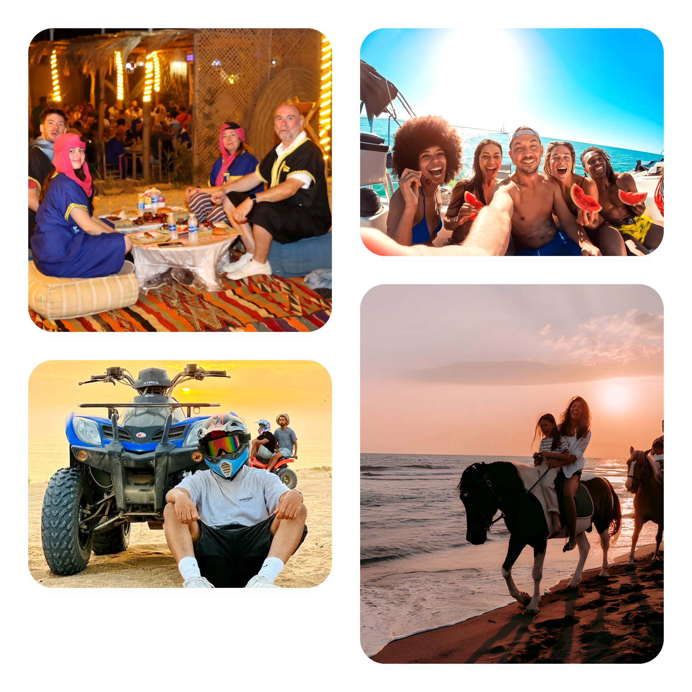
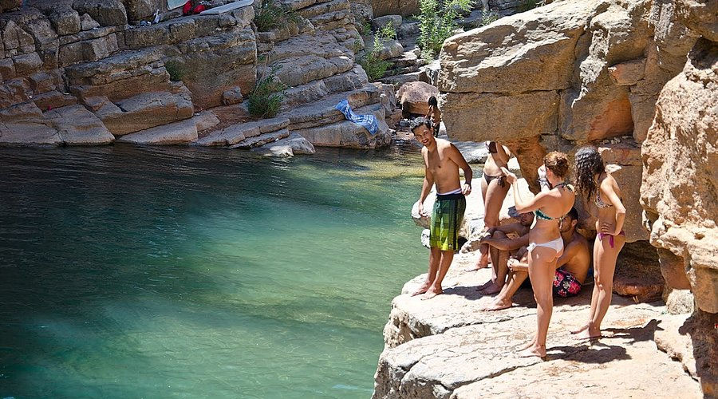
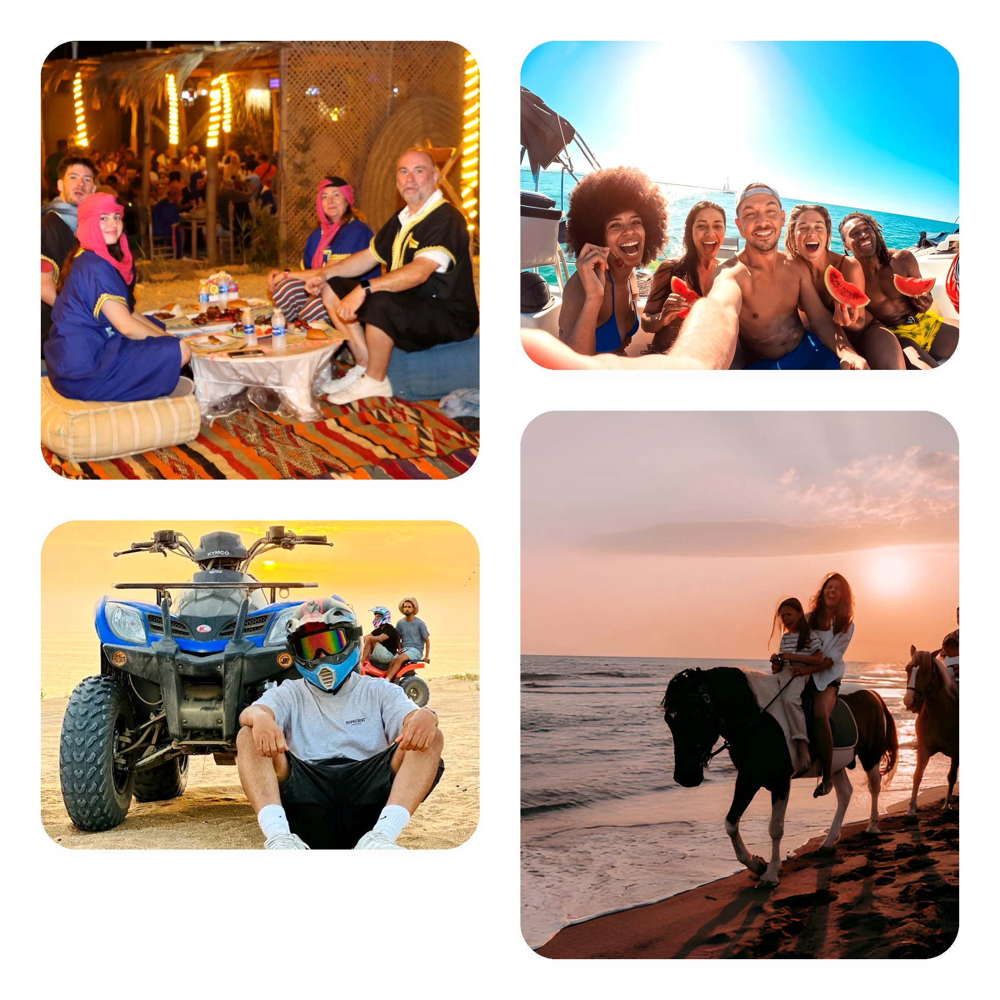
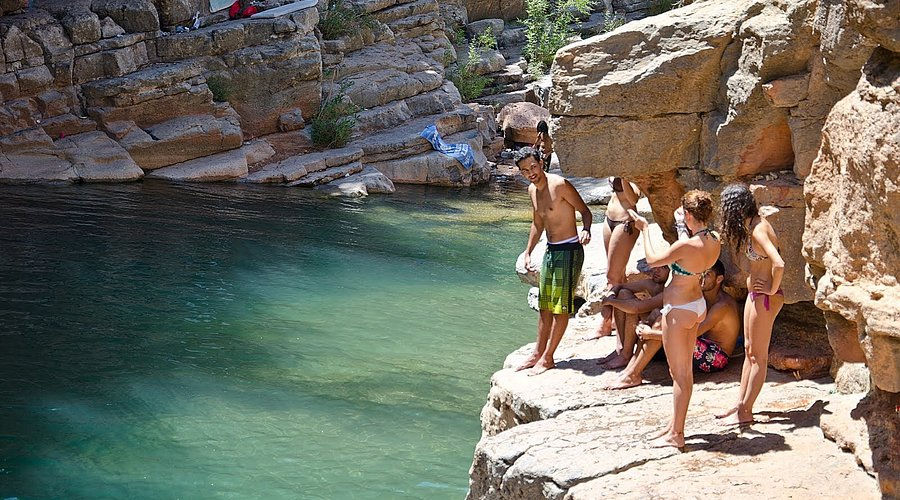

Crocoparc Agadir: Morocco's Premier Crocodile Park & Botanical Gardens
See 300+ Nile crocodiles in stunning gardens • Baby crocodile nursery • Educational family fun • Beautiful botanical paradise
Why Visit Crocoparc Agadir - Morocco's Best Wildlife Attraction
Discover Crocoparc Agadir - Morocco's Premier Wildlife & Botanical Park
Welcome to Crocoparc Agadir, Morocco's most spectacular wildlife attraction and one of the best things to do in Agadir with kids! Located just 15 kilometers north of Agadir in the village of Drarga, this remarkable Agadir crocodile park is home to over 300 impressive Nile crocodiles living in beautifully landscaped botanical gardens.
Since opening its doors, Crocoparc Morocco has become the top-rated family attraction in the Agadir region, with an astounding 11,000+ positive reviews from delighted visitors. Whether you're traveling with children, nature lovers, or simply looking for a unique and memorable experience, Crocoparc offers the perfect combination of wildlife, education, and natural beauty in one stunning location.
What makes Crocoparc truly special is the stunning setting. These magnificent creatures live in a lush tropical paradise filled with waterfalls, streams, and thousands of exotic plants. The park features multiple themed gardens including a spectacular Cactus Garden home to giant tortoises and iguanes, creating a complete botanical and zoological experience that goes far beyond a simple zoo visit.
What Makes Crocoparc Agadir the Perfect Family Attraction?
Unlike traditional zoos, Crocoparc focuses on creating a magical, educational experience in a beautifully landscaped natural environment. The park features safe viewing platforms where you can observe crocodiles from various angles, a fascinating laboratory nursery where baby crocodiles are hatched and raised, and shaded walking paths that wind through the botanical gardens. It's designed to be both exciting for children and relaxing for adults - the perfect family day out in Agadir!
With Crocoparc Agadir tickets starting at just €15 for park entry, or €30 including convenient hotel transfer from Agadir, this is one of the most affordable yet impressive attractions in the region. Spend 2-3 hours exploring at your own pace, perfect for a relaxing morning or afternoon activity that won't exhaust the kids. The park is open daily from 10 AM to 6 PM, making it easy to fit into your Agadir itinerary.
Whether you're seeking educational wildlife experiences, looking for family attractions in Agadir, or simply want to escape the beach for a few hours, Crocoparc delivers an unforgettable experience. Many visitors combine their Crocoparc visit with nearby Ranch Tamri for horse riding - making it a perfect full-day family adventure on the northern Agadir coast!
What to Expect at Crocoparc Agadir
Hotel Pickup & Arrival at Crocoparc
If you book our transfer service (€30 package), we'll collect you from your Agadir hotel in a comfortable air-conditioned vehicle for the scenic 20-minute drive north to Drarga. Alternatively, arrive independently (€15 entry-only option). The park opens daily at 10:00 AM, and we recommend arriving early morning or late afternoon to avoid midday heat and see crocodiles at their most active.
Main Crocodile Viewing Areas
Begin your visit at the main crocodile basins where over 300 Nile crocodiles live in beautifully landscaped natural habitats. Walk along elevated wooden platforms and bridges that provide safe, spectacular views of these prehistoric creatures. Watch crocodiles sunbathing on rocks, swimming in crystal-clear pools, and interacting with each other. Some of the largest specimens reach over 3 meters in length! Multiple viewing platforms allow you to observe from different angles - perfect for photography.
Baby Crocodile Nursery - Kids' Favorite!
Visit the fascinating laboratory nursery where baby crocodiles are hatched and raised. This is where kids (and adults!) get really excited - seeing dozens of tiny crocodiles is absolutely adorable and completely different from the massive adults! The nursery features informative displays explaining crocodile breeding, incubation, and early development. Educational panels teach about crocodile biology, behavior, and conservation efforts. This area provides incredible photo opportunities of baby crocs!
Botanical Gardens & Exotic Plants
Stroll through the stunning botanical gardens featuring hundreds of exotic plant species from around the world. Walk among giant bamboo groves, admire majestic baobab trees, cross wooden bridges surrounded by Papyrus plants, pass under beautiful waterfalls, and discover the incredible diversity of tropical vegetation. The gardens are beautifully maintained with shaded pathways perfect for relaxing walks. Benches throughout allow you to sit and enjoy the peaceful ambiance.
Cactus Garden with Giant Tortoises & Iguanas
Explore the newly expanded Cactus Garden featuring impressive cacti and succulent collections. This unique themed garden is home to giant tortoises that roam freely - kids love watching them! Lucky visitors may spot green iguanas basking in the sun (they're shy, so quiet observation works best!). Don't miss the suspended rope bridge that offers panoramic views over this special garden section.
Lunch at "La Table du Croco" Restaurant
Enjoy a meal or refreshments at the on-site restaurant "La Table du Croco" with views overlooking the park. Menu includes Moroccan dishes, sandwiches, salads, ice cream for kids, and refreshing drinks. Restaurant seating is shaded and comfortable - perfect for a break during your visit. Prices are reasonable and quality is good.
Gift Shop & Return to Hotel
Before leaving, browse the gift shop for crocodile-themed souvenirs, postcards, and local crafts - perfect mementos for the kids! If you booked our transfer service, your driver will return you to your Agadir hotel. Most families spend 2-3 hours total at the park, though you're welcome to stay longer. The park closes at 6:00 PM.
✅ What's Included
- ✓ Crocoparc entrance ticket (all zones)
- ✓ Access to all crocodile viewing areas
- ✓ Baby crocodile nursery visit
- ✓ Botanical gardens full access
- ✓ Cactus garden with tortoises & iguanas
- ✓ Educational displays and information panels
- ✓ Hotel transfer (€30 package only)
- ✓ Air-conditioned transportation (€30 package only)
- ✓ All park fees and taxes
- ✓ Free parking (if driving yourself)
❌ What's Not Included
- ✗ Food and drinks (restaurant available on-site)
- ✗ Gift shop purchases
- ✗ Professional photography services
- ✗ Feeding demonstrations (included in entry but scheduled)
- ✗ Guided tour (self-guided visit)
Essential Information for Your Crocoparc Visit
- Sun protection: Hat, sunglasses, and sunscreen (SPF 30+) - Moroccan sun is strong!
- Comfortable shoes: Walking shoes or sneakers (you'll be strolling through gardens)
- Camera/Phone: Fully charged for amazing crocodile and garden photos!
- Water bottle: Stay hydrated, though drinks available at restaurant
- Cash: For restaurant, snacks, and gift shop (some don't accept cards)
- Light clothing: Breathable fabrics - can be warm in summer
- Kids' entertainment: Crocodiles are exciting, but bring small snacks for young kids
- Best time to visit: Early morning (10-11 AM) or late afternoon (4-5 PM) when cooler
- Duration: Allow 2-3 hours for full visit (self-paced)
- Age requirements: Perfect for all ages! Popular with families with kids 2-12
- Safety: All viewing platforms have safety railings - very safe for children
- Wheelchair accessible: Most pathways are accessible; some areas may be challenging
- Opening hours: Daily 10:00 AM - 6:00 PM (last entry 5:00 PM)
- Feeding times: Check park schedule upon arrival (usually 11 AM and 4 PM)
- Photography: Allowed everywhere - bring your camera!
- Weather: Indoor/outdoor mix; most pathways shaded and protected
- Visit during feeding times (11 AM or 4 PM) for most action!
- Bring kids' stroller if needed - pathways are stroller-friendly
- Budget 2-3 hours minimum - rushing spoils the experience
- Restaurant is reasonably priced - good option for lunch
- Baby crocodile nursery is usually the kids' favorite spot!
- Combine with Ranch Tamri visit (5km away) for full-day adventure
- Arrive early on weekends/holidays to avoid crowds
- Gift shop has unique souvenirs - better prices than Agadir shops
Why Crocoparc Agadir is the Top Family Attraction
This remarkable Crocoparc Agadir experience offers unique benefits that make it Morocco's most popular wildlife attraction:
🐊 Educational Wildlife Experience
Crocoparc provides an incredible educational opportunity for children and adults alike. Learn about Nile crocodiles - one of Africa's most fascinating apex predators - in a safe, controlled environment. The park's informative displays explain crocodile biology, behavior, conservation status, and their role in African ecosystems. Kids leave with a newfound respect and understanding of these ancient reptiles that have survived millions of years.
👨👩👧👦 Perfect for Families with Young Children
Unlike many attractions that claim to be "family-friendly," Crocoparc Agadir is genuinely designed with families in mind. Safe viewing platforms mean parents can relax while kids observe the crocodiles. The shaded pathways prevent overheating in the Moroccan sun. Clean restrooms are located throughout. The on-site restaurant provides kid-friendly meals. Plus, at 2-3 hours, it's the perfect length to keep children engaged without exhausting them - making it ideal for families with kids aged 2-12.
🌺 Beautiful Botanical Paradise
Beyond the crocodiles, Crocoparc is a stunning botanical garden in its own right. Plant enthusiasts will appreciate the incredible variety of tropical and desert species. The landscaping is professional and beautiful - even visitors who don't love reptiles enjoy wandering through the lush gardens with waterfalls, streams, and colorful flowers. It's like a mini tropical paradise transported to Morocco!
💰 Excellent Value for Money
At just €15 for park entry (or €30 with convenient transfer), Crocoparc Agadir tickets offer exceptional value. You get hours of entertainment, education, and natural beauty for less than the cost of a typical restaurant meal! Compared to similar attractions worldwide, Crocoparc is remarkably affordable while maintaining high standards of animal care and visitor experience. It's one of the best value family activities in all of Morocco.
🏆 Highest-Rated Agadir Attraction
With over 11,000 positive reviews and a 4.5/5 rating, Crocoparc consistently ranks as the #1 wildlife attraction in the Agadir region. Visitors praise the well-maintained facilities, impressive crocodile collection, beautiful gardens, and excellent value. The park's commitment to animal welfare, conservation education, and visitor satisfaction has earned it a reputation as a must-visit destination for families traveling to Agadir.
Planning Your Crocoparc Agadir Visit
Best Time to Visit Crocoparc
While Crocoparc Agadir is open year-round, each season and time of day offers different advantages:
- Spring (March-May): Perfect weather with blooming gardens. Comfortable temperatures for walking. Highly recommended!
- Summer (June-August): Go early morning (10-11 AM) or late afternoon (4-6 PM) to avoid midday heat. Gardens are lush and green.
- Fall (September-November): Excellent weather with comfortable temps. Fewer crowds than spring. Great for photography with clear skies.
- Winter (December-February): Mild, pleasant days. Crocodiles less active but gardens beautiful. Weekends can be busy with locals.
How to Get to Crocoparc from Agadir
Crocoparc is located 15km north of Agadir in the village of Drarga on the road to Essaouira. You have several transport options:
- Our Transfer Service (€30 package): Includes park entry + round-trip hotel transfer - easiest option!
- Taxi: Grand taxi from Agadir costs around €15-20 return (negotiate price before departure)
- Car Rental: Easy 20-minute drive on well-maintained road; free parking available
- Combine with other trips: Many visitors do Crocoparc + Ranch Tamri horse riding same day
Crocoparc Tickets: Entry Only vs. Full Package
We offer two convenient Crocoparc Agadir ticket options to suit different needs:
- Entry Only (€15): Park admission ticket - arrange your own transport
- Full Package (€30): Park entry + round-trip hotel transfer from Agadir - best value and most convenient!
- Family Discount: Children under 5 usually free (verify at booking)
- Group Rates: Available for groups of 8+ people
- What's included: Access to all zones, crocodiles, nursery, gardens, tortoise area, educational displays
Frequently Asked Questions About Crocoparc Agadir
Most visitors spend 2-3 hours at Crocoparc Agadir, which is the perfect amount of time to see all the crocodiles, explore the botanical gardens, visit the baby nursery, and have a leisurely meal or snack. If you're with young children or want to really relax in the gardens, you might stay 3-4 hours. The park is self-paced, so you can spend as much or little time as you wish!
Yes! Crocoparc is completely safe for children of all ages. All crocodile viewing areas feature elevated wooden platforms with secure railings - there's no way for visitors to fall in or get close to the crocodiles. The pathways are wide, well-maintained, and stroller-friendly. Parents can relax while kids safely observe the wildlife. With over 11,000 reviews and families visiting daily, it has an excellent safety record!
Besides the 300+ Nile crocodiles, Crocoparc is home to several other fascinating species! In the Cactus Garden, you'll find giant African tortoises roaming freely among the cacti. If you're lucky and observant, you might spot green iguanas basking in sunny spots (they're shy, so move quietly!). The park also features hundreds of exotic plant species, creating a complete botanical and zoological experience. It's much more than just a crocodile park!
Crocodile feeding demonstrations typically occur twice daily - usually around 11:00 AM and 4:00 PM, though times can vary. Check the schedule at the park entrance upon arrival or ask staff. Feeding times are the most exciting moments to visit as you'll see the crocodiles become active and display their incredible power. Arrive 10-15 minutes early to get a good viewing spot on the platforms!
Absolutely! Crocoparc Agadir maintains high standards of animal welfare. The crocodiles live in spacious, naturalistic habitats with clean water, proper basking areas, and enrichment. The park employs experienced reptile keepers and works with veterinary specialists. Regular health checks ensure all animals are thriving. The impressive breeding success (dozens of babies born in the nursery) demonstrates excellent animal care standards.
Yes! Crocoparc has an on-site restaurant called "La Table du Croco" offering Moroccan dishes, sandwiches, salads, pizzas, ice cream, and beverages. The restaurant overlooks the park with shaded seating - perfect for lunch or snacks. Prices are reasonable (€8-15 for meals). You can also bring your own snacks and water if you prefer. There are designated eating areas throughout the park.
Crocoparc Agadir price options: €15 per person for park entry only (you arrange your own transport), or €30 per person for our full package including park entry plus round-trip hotel transfer from Agadir. Children under 5 years are typically free. Group discounts available for 8+ people. It's excellent value considering you get access to all zones, the botanical gardens, and 2-3 hours of entertainment!
Crocoparc Agadir is open daily from 10:00 AM to 6:00 PM, including weekends and most holidays. Last entry is at 5:00 PM to give visitors enough time to explore before closing. We recommend arriving between 10-11 AM (cooler, animals more active) or 4-5 PM (afternoon visit before closing). Avoid midday in summer (12-3 PM) when it's hottest.
Yes, most of Crocoparc is wheelchair and stroller accessible! The main pathways are paved and wide enough for wheelchairs. However, a few areas (like the suspended rope bridge in the Cactus Garden) may be challenging. The park staff are very helpful and can guide you to the most accessible routes. Wheelchairs can navigate about 80-90% of the park including all main crocodile viewing areas.
No, visitors cannot touch or feed the crocodiles - this is for everyone's safety! All viewing is done from secure elevated platforms. Only trained park staff handle and feed the animals during scheduled demonstrations. This ensures both visitor safety and proper animal care. You'll get excellent views from the platforms (some crocodiles just meters away!), perfect for photos without any danger.
What Visitors Say About Crocoparc Agadir
11,245 verified reviews
"Absolutely amazing Crocoparc Agadir experience! Took our kids (ages 5 and 8) and they were mesmerized by the crocodiles. The baby nursery was their favorite part – so cute! The botanical gardens are stunning, really well-maintained. We spent 3 hours and could have stayed longer. Great value at €15 entry. Perfect family activity in Agadir – highly recommend!"
"Crocoparc was the highlight of our Agadir trip with kids! Our children (ages 6 and 9) were absolutely fascinated by the crocodiles - especially the baby nursery. The gardens are beautiful and well-maintained. Staff was friendly and helpful. We had lunch at the restaurant which was good quality. Spent 3 hours and it flew by. Best family attraction in Agadir by far!"
"Wonderful Crocoparc Agadir visit! The botanical gardens are impressive with so many exotic plants. The crocodiles are huge - some over 3 meters! Baby crocs in the nursery were adorable. Park is clean, well-organized, and safe for kids. The transfer service (€30) was convenient. Only minor issue: can get hot midday in summer, so go early or late afternoon. Overall excellent!"
"Best value activity in Agadir! For just €15 entry, you get to see 300+ crocodiles in a gorgeous tropical setting. The botanical gardens alone are worth the visit - so peaceful and beautiful. Kids loved the tortoises in the cactus garden. We spent 2.5 hours and saw everything. Great photo opportunities. Perfect break from the beach. Highly recommend Crocoparc Morocco!"
"Très bien! Crocoparc is an excellent family attraction. The crocodiles are impressive - so many of them in beautiful natural settings. The gardens are gorgeous with waterfalls and exotic plants. Educational for kids but enjoyable for adults too. Restaurant was good for lunch. Only downside: very busy on weekends. Visit on weekdays if possible. Still worth it - tres recommandé!"
"Good family attraction but can get crowded. The crocodiles are impressive and the baby nursery is cute. Gardens are nice but smaller than expected. We booked the €30 transfer package which was convenient - saves hassle of finding taxis. Kids (ages 4 and 7) enjoyed it for about 2 hours. Worth visiting but manage expectations - it's not huge. Still, a fun Agadir family activity."
"¡Increíble! Crocoparc Agadir is a must-visit with children. My daughter (age 6) talks about the baby crocodiles every day! The park is beautiful, clean, and well-organized. Feeding demonstration at 4 PM was exciting - crocodiles jumping for food! The transfer service from our hotel was smooth. Excellent value at €30 per person including transport. Best family day in Agadir!"
Why Book Your Crocoparc Tickets with The Local Guide?
- 🏆 Local Expertise: Born and raised in Agadir – we handle all logistics for hassle-free experience
- 🎫 Skip-the-Line: Pre-arranged tickets mean you avoid queues at park entrance
- 🚗 Convenient Transfer: Door-to-door service from any Agadir hotel included in €30 package
- ⭐ Trusted Service: Partnered with Crocoparc to provide best visitor experience
- 💰 Best Price: €15 entry only, or €30 full package - guaranteed best rates
- 👨👩👧👦 Family-Focused: We understand family needs and can arrange child seats, flexible timing
- 📱 Easy Booking: Instant confirmation via WhatsApp - book in seconds
- 📅 Flexible Options: Entry only OR full transfer package - your choice
- 🔄 Free Cancellation: Cancel up to 24 hours before for full refund
- 🌍 Complete Service: We can combine Crocoparc with Ranch Tamri, Paradise Valley, or other tours
Combine Your Crocoparc Visit with Other Agadir Activities
Make it a full day! Combine your Crocoparc visit with these nearby attractions and tours:
🐴 Ranch Tamri Horse Riding
Just 5km from Crocoparc! Combine with beach horse riding at Ranch Tamri for a perfect full-day family adventure.
🏞️ Paradise Valley
Another top nature attraction! Swimming in natural pools just 45 min from Agadir - perfect combo with Crocoparc morning visit.
🏛️ Agadir City Tour
Explore Agadir's Kasbah, Souk El Had market, and marina - great orientation tour before or after Crocoparc visit.
🏍️ Quad Biking Safari
Add adventure! Desert quad biking is perfect after a relaxing morning at Crocoparc - balance for families with older kids.
Ready to Visit Crocoparc Agadir?
Book your tickets today - Morocco's #1 family attraction awaits!